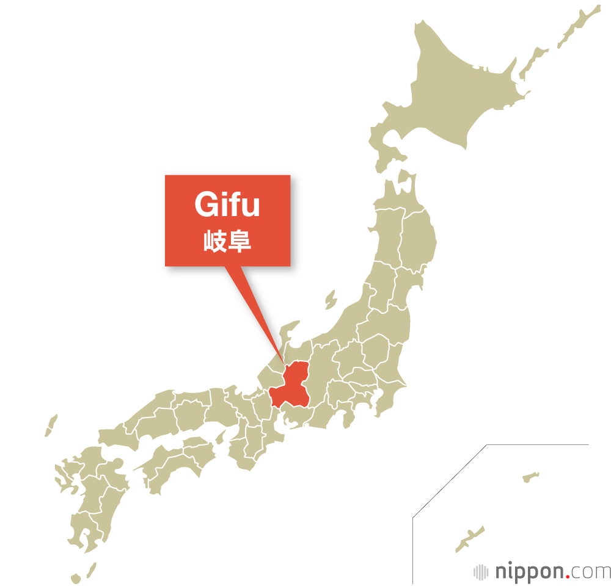

Quien es Junji Ito
Junji Ito un autor de manga centrado en el género del horror.
Nacido en la prefectura de Gifu en 1963, cerca de Nagano. Creció en una vieja y tradicional casa familiar.

Comenzo a dibujar manga a los cuatro años, hobby que lo acompaño hasta que empezo su trabajo como protésico dental en 1984.
En 1987, la revista Gekkan Haloween publicó uno de sus relatos consiguiendo una mencion honorifica en el Premio Kazuo Umezu.
Ultimas publicaciones
Manga
Su ultima publicacion despues del cierre de ecc, editorial por excelencia de Junji Ito, a sido la recopilación de Uzumaki de Planeta. A pesar de esta publicacion no se tiene noticias si planeta a comprado las ips de resto de obras que poseia ecc al igual que adquirio barias de las ips de esta editorial.
Anime
El ultimo anime publicado de este autor a sido Uzumaki producida por Adult Swim x Production L.G USA y Maki Trashima-Furuta.